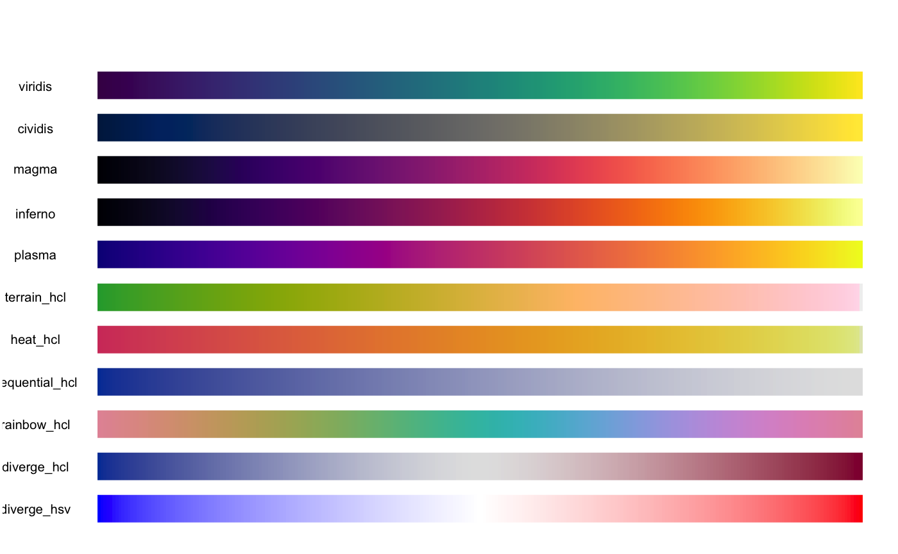
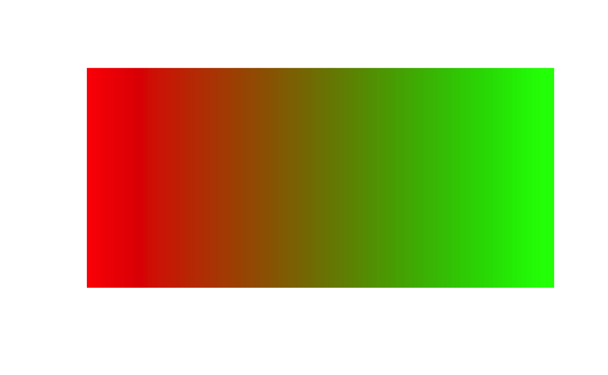
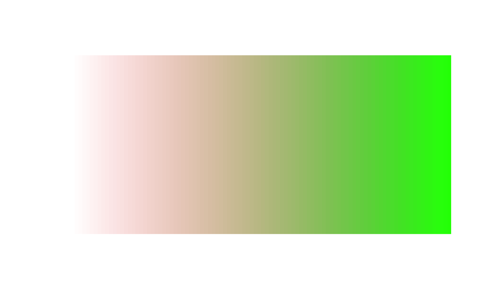
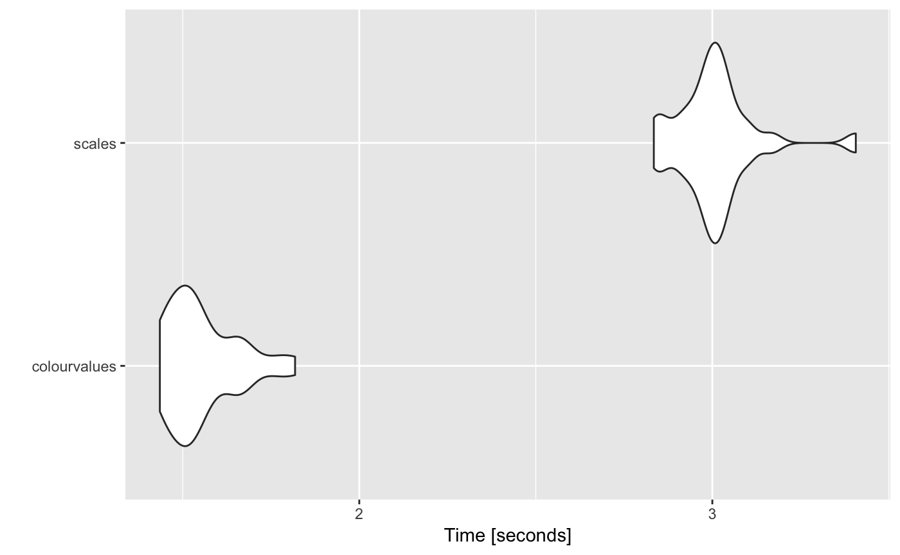
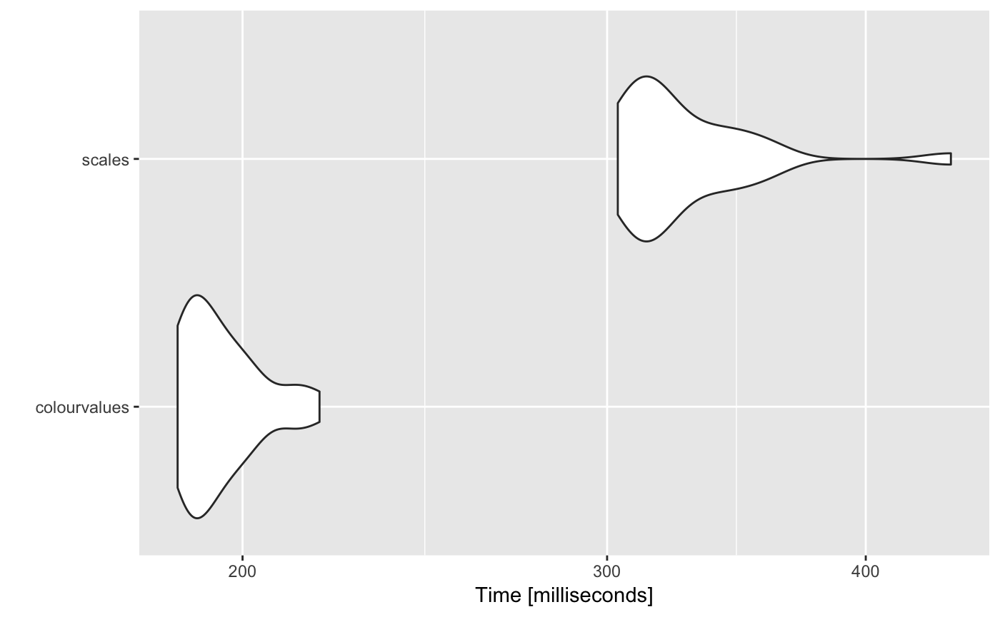

What does it do?
It maps viridis colours (by default) to values, and quickly!
Note It does not perform a 1-to-1 mapping of a palette to values. It interpolates the colours from a given palette.
Why did you build it?
I’m aware there are other methods for mapping colours to values. And which do it quick too. But I can never remember them, and I find the interfaces a bit cumbersome. For example, scales::col_numeric(palette = viridisLite::viridis(5), domain = range(1:5))(1:5).
I wanted one function which will work on one argument.
colour_values(1:5)
# [1] "#440154FF" "#3B528BFF" "#21908CFF" "#5DC963FF" "#FDE725FF"
colour_values(letters[1:5])
# [1] "#440154FF" "#3B528BFF" "#21908CFF" "#5DC963FF" "#FDE725FF"I also want it available at the src (C/C++) level for linking to other packages.
Why do you spell colour with a ‘u’?
Because it’s correct, and R tells us to
For consistency, aim to use British (rather than American) spelling
But don’t worry, color_values(1:5) works as well
How can I make use of it in my package?
Rcpp
All functions are written in Rcpp. I have exposed some of them in header files so you can “link to” them in your package.
For example, the LinkingTo section in DESCRIPTION will look something like
And in a c++ source file so you can #include a header and use the available functions
R
If you’re not using Rcpp, just Import this package like you would any other.
Do you have any examples?
Of course!

Are there only viridis palettes?
No, you can chose one from
colour_palettes()
# [1] "viridis" "cividis" "magma" "inferno"
# [5] "plasma" "ylorrd" "ylorbr" "ylgnbu"
# [9] "ylgn" "reds" "rdpu" "purples"
# [13] "purd" "pubugn" "pubu" "orrd"
# [17] "oranges" "greys" "greens" "gnbu"
# [21] "bupu" "bugn" "blues" "spectral"
# [25] "rdylgn" "rdylbu" "rdgy" "rdbu"
# [29] "puor" "prgn" "piyg" "brbg"
# [33] "terrain" "topo" "heat" "cm"
# [37] "rainbow" "terrain_hcl" "heat_hcl" "sequential_hcl"
# [41] "rainbow_hcl" "diverge_hcl" "diverge_hsv" "ygobb"
# [45] "matlab_like2" "matlab_like" "magenta2green" "cyan2yellow"
# [49] "blue2yellow" "green2red" "blue2green" "blue2red"And you can use show_colours() to view them all. Here’s what some of them look like

Do I have to use the in-built palettes?
No, you can use your own specified as a matrix of red, green and blue columns in the range [0,255]
n <- 100
m <- grDevices::colorRamp(c("red", "green"))( (1:n)/n )
df <- data.frame(a = 10, x = 1:n)
df$col <- colour_values(df$x, palette = m)
bar_plot( df )
Do you support ‘alpha’ values
Yep. Either supply a single alpha value for all the colours
## single alpha value for all colours
df <- data.frame(a = 10, x = 1:255)
df$col <- colour_values(df$x, alpha = 50)
bar_plot( df )Or use a vector of values the same length as x
df <- data.frame(a = 10, x = 1:300, y = rep(c(1:50, 50:1), 3) )
df$col <- colour_values(df$x, alpha = df$y)
bar_plot( df )Or include the alpha value as a 4th column in the palette matrix
n <- 100
m <- grDevices::colorRamp(c("red", "green"))( (1:n)/n )
## alpha values
m <- cbind(m, seq(0, 255, length.out = 100))
df <- data.frame(a = 10, x = 1:n)
df$col <- colour_values(df$x, palette = m)
bar_plot( df )
Can I get a summary of colours to use in a legend?
Yes, for numeric values use the n_summaries argument to specify the number of summary values you’d like
colour_values(1:10, n_summaries = 3)
# $colours
# [1] "#440154FF" "#482878FF" "#3E4A89FF" "#31688EFF" "#26838EFF"
# [6] "#1F9D89FF" "#35B779FF" "#6CCE59FF" "#B4DD2CFF" "#FDE725FF"
#
# $summary_values
# [1] "1.00" "5.50" "10.00"
#
# $summary_colours
# [1] "#440154FF" "#21908CFF" "#FDE725FF"You can also specify the number of digits you’d like returned in the summary
colour_values(rnorm(n = 10), n_summaries = 3, digits = 2)
# $colours
# [1] "#39568CFF" "#1F968BFF" "#440154FF" "#FDE725FF" "#277F8EFF"
# [6] "#355F8DFF" "#482575FF" "#2C738EFF" "#453781FF" "#48196BFF"
#
# $summary_values
# [1] "-1.64" "0.29" "2.22"
#
# $summary_colours
# [1] "#440154FF" "#21908CFF" "#FDE725FF"You can also use format = FALSE if you don’t want the summary values formatted.
dte <- seq(as.Date("2018-01-01"), as.Date("2018-02-01"), by = 1)
colour_values(dte, n_summaries = 3)
# $colours
# [1] "#440154FF" "#470D60FF" "#48196BFF" "#482474FF" "#472E7CFF"
# [6] "#453882FF" "#414286FF" "#3E4B8AFF" "#3A548CFF" "#365D8DFF"
# [11] "#32658EFF" "#2E6D8EFF" "#2B758EFF" "#287D8EFF" "#25858EFF"
# [16] "#228C8DFF" "#20948CFF" "#1E9C89FF" "#20A386FF" "#25AB82FF"
# [21] "#2DB27DFF" "#39BA76FF" "#48C16EFF" "#58C765FF" "#6ACD5BFF"
# [26] "#7ED34FFF" "#92D742FF" "#A8DB34FF" "#BEDF26FF" "#D4E21BFF"
# [31] "#E9E41AFF" "#FDE725FF"
#
# $summary_values
# [1] "2018-01-01" "2018-01-16" "2018-02-01"
#
# $summary_colours
# [1] "#440154FF" "#21908CFF" "#FDE725FF"
colour_values(dte, n_summaries = 3, format = F)
# $colours
# [1] "#440154FF" "#470D60FF" "#48196BFF" "#482474FF" "#472E7CFF"
# [6] "#453882FF" "#414286FF" "#3E4B8AFF" "#3A548CFF" "#365D8DFF"
# [11] "#32658EFF" "#2E6D8EFF" "#2B758EFF" "#287D8EFF" "#25858EFF"
# [16] "#228C8DFF" "#20948CFF" "#1E9C89FF" "#20A386FF" "#25AB82FF"
# [21] "#2DB27DFF" "#39BA76FF" "#48C16EFF" "#58C765FF" "#6ACD5BFF"
# [26] "#7ED34FFF" "#92D742FF" "#A8DB34FF" "#BEDF26FF" "#D4E21BFF"
# [31] "#E9E41AFF" "#FDE725FF"
#
# $summary_values
# [1] 17532.0 17547.5 17563.0
#
# $summary_colours
# [1] "#440154FF" "#21908CFF" "#FDE725FF"For categorical values use summary = TRUE to return a uniqe set of the values, and their associated colours
colour_values(sample(letters, size = 50, replace = T), summary = T)
# $colours
# [1] "#55C667FF" "#453781FF" "#FDE725FF" "#404788FF" "#287D8EFF"
# [6] "#FDE725FF" "#29AF7FFF" "#1F968BFF" "#238A8DFF" "#B8DE29FF"
# [11] "#2D708EFF" "#29AF7FFF" "#2D708EFF" "#FDE725FF" "#95D840FF"
# [16] "#FDE725FF" "#481567FF" "#39568CFF" "#287D8EFF" "#3CBB75FF"
# [21] "#2D708EFF" "#DCE319FF" "#FDE725FF" "#3CBB75FF" "#20A387FF"
# [26] "#481567FF" "#29AF7FFF" "#481567FF" "#440154FF" "#238A8DFF"
# [31] "#440154FF" "#73D055FF" "#73D055FF" "#440154FF" "#482677FF"
# [36] "#DCE319FF" "#482677FF" "#440154FF" "#95D840FF" "#238A8DFF"
# [41] "#DCE319FF" "#DCE319FF" "#55C667FF" "#482677FF" "#33638DFF"
# [46] "#440154FF" "#33638DFF" "#482677FF" "#73D055FF" "#440154FF"
#
# $summary_values
# [1] "a" "b" "c" "e" "f" "g" "h" "j" "k" "m" "n" "o" "p" "s" "t" "u" "w"
# [18] "x" "y" "z"
#
# $summary_colours
# [1] "#440154FF" "#481567FF" "#482677FF" "#453781FF" "#404788FF"
# [6] "#39568CFF" "#33638DFF" "#2D708EFF" "#287D8EFF" "#238A8DFF"
# [11] "#1F968BFF" "#20A387FF" "#29AF7FFF" "#3CBB75FF" "#55C667FF"
# [16] "#73D055FF" "#95D840FF" "#B8DE29FF" "#DCE319FF" "#FDE725FF"What’s the performance like?
10 million numeric values
library(microbenchmark)
library(ggplot2)
library(scales)
library(viridisLite)
n <- 1e7
df <- data.frame(x = rnorm(n = n))
m <- microbenchmark(
colourvalues = { colourvalues::colour_values(x = df$x) },
scales = { col_numeric(palette = rgb(subset(viridis.map, opt=="D")[, 1:3]), domain = range(df$x))(df$x) },
times = 25
)
m
# Unit: seconds
# expr min lq mean median uq max neval
# colourvalues 1.590618 1.626491 1.669927 1.645881 1.700298 1.857823 25
# scales 2.805023 2.942096 3.011355 3.000689 3.036244 3.537374 25
autoplot(m)
# Coordinate system already present. Adding new coordinate system, which will replace the existing one.
1 million characters (26 unique values)
library(microbenchmark)
library(ggplot2)
library(scales)
library(viridisLite)
n <- 1e6
x <- sample(x = letters, size = n, replace = TRUE)
df <- data.frame(x = x)
m <- microbenchmark(
colourvalues = { x <- colourvalues::colour_values(x = df$x) },
scales = { y <- col_factor(palette = rgb(subset(viridis.map, opt=="D")[, 1:3]), domain = unique(df$x))(df$x) },
times = 25
)
m
# Unit: milliseconds
# expr min lq mean median uq max neval
# colourvalues 186.0676 188.7427 195.2648 192.8407 199.8790 217.8761 25
# scales 303.5928 310.3133 327.8760 317.6924 338.1438 439.7298 25
autoplot(m)
# Coordinate system already present. Adding new coordinate system, which will replace the existing one.